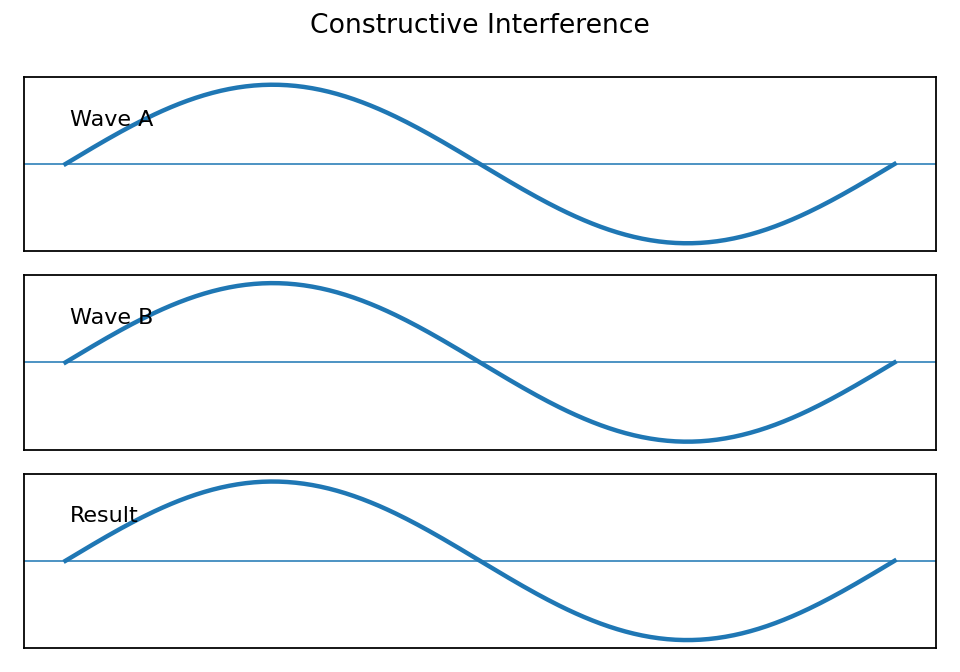
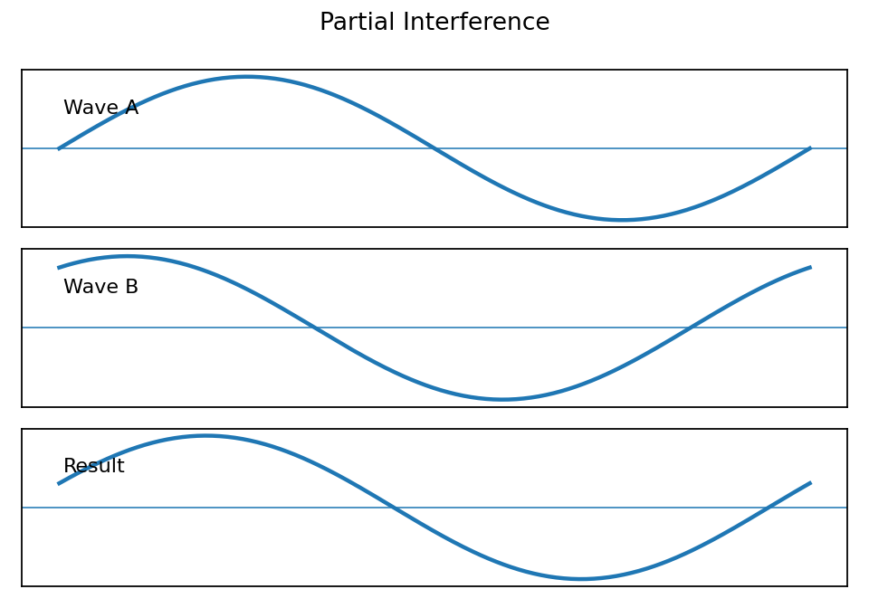

Interference Diagram Task
Name:
Show work and mark answers clearly.
Destructive Interference

Identify the type of interference shown and describe what must be true for complete cancellation.

Identify the type of interference shown. Explain how the resulting displacement compares to either original wave.
Identify the type of interference shown and describe what must be true for complete cancellation.

Determine whether the interference is fully constructive, fully destructive, or partial. Support your choice with the diagram.
At one point, Wave A has displacement $+4\,\text{cm}$ and Wave B has displacement $-1\,\text{cm}$. Find the resulting displacement and name the interaction type.
Use the diagram to explain how a second sound wave can reduce a detected sound. Identify one condition needed for strong cancellation.
A student labels two matching crests as destructive interference. Critique the label and provide the correct interpretation.